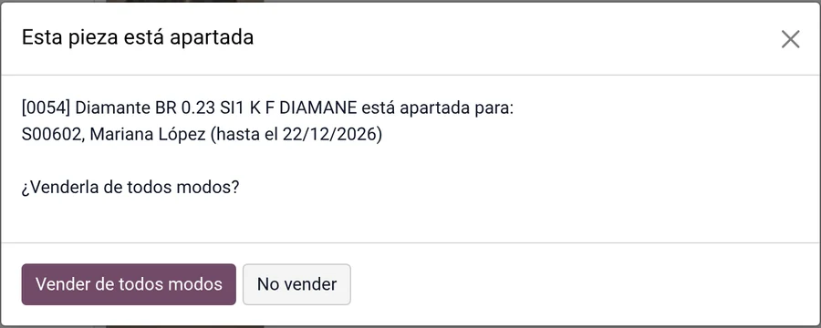
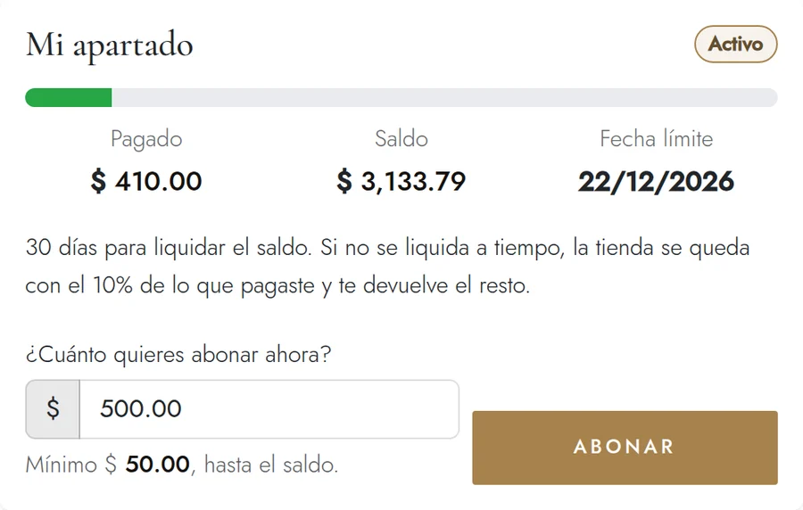

<section class="oe_container" style="font-family:Inter,Arial,sans-serif;color:#24201C">
  <div style="max-width:1080px;margin:0 auto;padding:24px 16px">
    <h2 style="font-size:34px;margin:0 0 8px;text-align:center">Sales, Quotations &amp; Layaway from POS</h2>
    <p style="text-align:center;font-size:18px;color:#776E64;margin:0 0 12px">Quotations, special orders and layaways made at the Odoo register: down payments, a balance the customer pays at the shop or online, and the rules that keep each layaway in order.</p>
    <p style="text-align:center;color:#776E64;margin:0 0 28px"><i>Cotizaciones, pedidos y apartados desde la caja de Odoo, con enganche, abonos en tienda o en l&#237;nea, y abonos autom&#225;ticos a la tarjeta guardada.</i></p>

    <h3 style="font-size:26px;margin:32px 0 14px">What it adds to Odoo</h3>
    <table style="width:100%;border-collapse:collapse;font-size:15px">
      <thead><tr style="background:#F1E8DB"><th style="text-align:left;padding:10px">At the register</th><th style="text-align:left;padding:10px">For the customer</th><th style="text-align:left;padding:10px">Behind the scenes</th></tr></thead>
      <tbody><tr>
        <td style="padding:10px;vertical-align:top">Quotation, Order or Layaway from the cart, with one or more down payments and a detailed receipt.</td>
        <td style="padding:10px;vertical-align:top">&#171;My layaway&#187; / &#171;My order&#187; page with paid, balance and deadline, paying any amount online.</td>
        <td style="padding:10px;vertical-align:top">Deadline, minimum payments, cancellation fee, reminders, expiry and automatic payments on the saved card.</td>
      </tr></tbody>
    </table>

    <h3 style="font-size:26px;margin:40px 0 10px">Quotations, orders and layaways at the register</h3>
    <ul style="font-size:16px;line-height:1.8">
      <li>Create the three document types from the Point of Sale cart. Nothing is confirmed on creation: Odoo confirms it natively when the payment is validated.</li>
      <li>Collect one or more down payments with Odoo&#8217;s own down-payment product; the balance always comes from what was really paid.</li>
      <li>Detailed receipt: title by document type, Total / Paid / Balance, the products, the delivery date and, while there is a balance, a QR to pay online. Optional duplicate copy for the shop.</li>
      <li>Orders and layaways stay in the register&#8217;s list until delivered; closing one asks whether the customer takes the goods now.</li>
      <li>Optional delivery choices for quotations: print, email or both.</li>
    </ul>

    <h3 style="font-size:26px;margin:40px 0 10px">Layaway terms Odoo looks after</h3>
    <p>Set them once per company (Point of Sale &#9656; Settings). Each layaway keeps the terms it was made with, even if you change them later.</p>
    <table style="width:100%;border-collapse:collapse;font-size:15px">
      <thead><tr style="background:#F1E8DB"><th style="text-align:left;padding:10px">Term</th><th style="text-align:left;padding:10px">Example</th><th style="text-align:left;padding:10px">What happens</th></tr></thead>
      <tbody>
        <tr><td style="padding:10px;border-bottom:1px solid #E7DDCF"><b>Days to pay</b></td><td style="padding:10px;border-bottom:1px solid #E7DDCF">30</td><td style="padding:10px;border-bottom:1px solid #E7DDCF">The deadline prints on the receipt and shows on &#171;My layaway&#187;.</td></tr>
        <tr><td style="padding:10px;border-bottom:1px solid #E7DDCF"><b>Minimum down payment</b></td><td style="padding:10px;border-bottom:1px solid #E7DDCF">10 %</td><td style="padding:10px;border-bottom:1px solid #E7DDCF">The register refuses a smaller first payment (paying it all is always fine).</td></tr>
        <tr><td style="padding:10px;border-bottom:1px solid #E7DDCF"><b>Minimum payment</b></td><td style="padding:10px;border-bottom:1px solid #E7DDCF">$50</td><td style="padding:10px;border-bottom:1px solid #E7DDCF">The register and the online page refuse smaller payments, unless they settle the balance.</td></tr>
        <tr><td style="padding:10px"><b>Cancellation fee</b></td><td style="padding:10px">10 %</td><td style="padding:10px">What the shop keeps if the layaway expires unpaid; Odoo works out what to give back.</td></tr>
      </tbody>
    </table>
    <ul style="font-size:16px;line-height:1.8;margin-top:14px">
      <li><b>The piece is not sold twice:</b> before selling a piece laid away for someone else, the register says whose layaway it is and until when, and asks first.</li>
      <li><b>Reminder before the deadline</b> by email, as a regular Odoo automation rule (change the days or the email there).</li>
      <li><b>Expiry:</b> the day after the deadline an unpaid layaway expires: a note with the fee and the refund, a to-do for the salesperson and an email to the customer. Nothing is refunded by itself; &#171;Extend layaway&#187; gives more time.</li>
      <li><b>Orders</b> (special orders) can ask for a minimum down payment too (for example 30 %), show &#171;My order&#187; to the customer and remind them of the balance before the delivery date.</li>
    </ul>
    

    <h3 style="font-size:26px;margin:40px 0 10px">&#171;My layaway&#187;: the customer pays from home</h3>
    <p>The receipt&#8217;s QR opens the order&#8217;s page: what was paid, the balance, the deadline and a box to pay any amount between the minimum payment and the balance, through Odoo&#8217;s own payment page with any payment provider you use.</p>
    

    <h3 style="font-size:26px;margin:40px 0 10px">New: automatic layaway payments</h3>
    <p>When the customer pays online and ticks &#171;Save my payment details&#187;, their card is saved and their next online payments no longer ask for it. With their permission you go one step further: the saved card pays the layaway by itself.</p>
    <ul style="font-size:16px;line-height:1.8">
      <li>On the layaway, <b>Automatic payments</b>: the card, how often (every week, every 15 days or every month), the first date and the amount. Odoo suggests the amount that pays the balance by the deadline and tells you if yours would fall short.</li>
      <li>Each payment emails the customer and is noted on the order; &#171;My layaway&#187; shows the plan and the next date. The last payment is only what is left, and it stops by itself once paid.</li>
      <li>A declined card is tried again 2 days later and the salesperson gets a to-do; after 3 declines in a row it stops. It also stops if the layaway expires or is cancelled.</li>
      <li>Built on Odoo&#8217;s own saved cards and payment transactions: it works with any payment provider that saves cards. In Mexico, <a href="https://apps.odoo.com/apps/modules/17.0/xpago" style="color:#B8322A">XPago</a> saves cards.</li>
    </ul>

    <h3 style="font-size:26px;margin:40px 0 10px">Before you start</h3>
    <ul style="font-size:16px;line-height:1.8">
      <li>Odoo 17 with Point of Sale, Sales and the POS&#8211;Sales link (<code>pos_sale</code>).</li>
      <li>The down-payment product needs an income account in every company that sells.</li>
      <li>Every option is configured per Point of Sale in Settings &#9656; Point of Sale &#9656; &#8220;XUBAX &#8211; Sale Order / Quotation&#8221;. English and Spanish.</li>
    </ul>
    <p style="margin-top:24px">Support: <a href="mailto:soporte@xubax.com" style="color:#B8322A">soporte@xubax.com</a> &#183; <a href="https://www.xubax.com" style="color:#B8322A">www.xubax.com</a> &#183; <a href="https://xpago.mx/apartados-odoo" style="color:#B8322A">Apartados en Odoo (espa&#241;ol)</a></p>
  </div>
</section>
